EPLF-VINS: Real-Time Monocular Visual-Inertial SLAM With Efficient Point-Line Flow Features
Lei Xu , Hesheng Yin , Tong Shi , Di Jiang , and Bo Huang
Abstract—This letter introduces an efficient visual-inertial simultaneous localization and mapping (SLAM) method using point and line features. Currently, point-based SLAM methods do not perform well in scenarios such as weak textures and motion blur. Many researchers have noticed the excellent properties of line features in space and have attempted to develop line-based SLAM systems. However, the vast computational effort of the line extraction and description matching process makes it challenging to guarantee the real-time performance of the whole SLAM system, and the incorrect line detection and matching limit the performance improvement of the SLAM system. In this letter, we improve the traditional line detection model by means of short-line fusion, line feature uniform distribution, and adaptive threshold extraction to obtain high-quality line features for constructing SLAM constraints. Based on the gray level invariance assumption and colinear constraint, we propose a line optical flow tracking method, which significantly improves the speed of line feature matching. In addition, a measurement model that is independent of line endpoints is presented for estimating line residuals. The experimental results show that our algorithm improves the efficiency of line feature detection and matching and localization accuracy.
Index Terms—Simultaneous localization and mapping (SLAM), line segment extraction and matching, monocular visual-inertial SLAM, localization.
I. INTRODUCTION
IMULTANEOUS localization and mapping (SLAM) tech-S nology is crucial in autonomous driving, unmanned aerial vehicles, robotics, and augmented reality. The inherent characteristics between different sensors make the multiple-sensor fusion SLAM technique with complementary advantages a dominant research direction. Visual-inertial SLAM navigation systems (VINS), which are low-cost and lightweight compared with other multisensor fusion solutions, have received much attention from researchers [1], [2], [3]. These point-based VINS methods have difficulty finding a sufficient number of reliable point features in some artificial scenarios, such as sparse or repetitive textures, which eventually lead to a reduction in the overall system pose estimation accuracy or even failure [4].
There are abundant line features in artificial scenes, and one-dimensional line features contain more information than zero-dimensional point features [5]. Therefore, line features are a good complement when there are not enough point features in the scene. Researchers [6], [7], [8], [9], [10] have made some progress in recent years based on the excellent geometric properties ofline features. Although line features can improve the accuracy and robustness of SLAM in challenging environments [4], the disadvantage is that line features are more difficult to track than point features, which makes line-based SLAM methods less popular than point-based SLAM methods. There are three main problems: error matching, occlusion, and real-time performance. The error-matching problem of line segments under repeated textures is serious, and line segment extraction is subject to occlusion or blurred appearance. A line segment may break into several small segments [11], which affects the reprojection error even if it can be successfully matched. Additionally, the line segment extraction, description, and matching processes have difficulty meeting the real-time requirements of SLAM [9].
Line flow is a better direction to break the current bottleneck of line features used in SLAM. Line flow using spatial and temporal coherence can reduce the problem of error matching between frames. In addition, the line flow without line segment description can improve the real-time performance of line feature tracking. However, little work has been done in this field. Wang [11] constructed a line flow form that predicts the approximate position of the next frame line by spatial and temporal coherence and then performs an efficient line search within the proximity region to match the line. This method avoids the line feature description process and reduces the line search and matching region but still requires line extraction and matching into each frame. Therefore, this method has a gap with the traditional one-frame detection and multiframe tracking optical flow method in terms of performance.
In this letter, we propose a line optical flow that can efficiently complete one-frame detection and multiframe tracking to solve the error-matching and time-consuming problems of line feature matching. Fig. 1 demonstrates the line features tracked by our algorithm. The contributions of EPLF-VINS are as follows:
- An efficient line feature detection and tracking model is proposed, which contains two parts. A modified EDLines algorithm uses short-line fusion, line feature uniform distribution, and adaptive threshold extraction to efficiently detect accurate line features. A novel line optical flow feature tracker efficiently tracks detected line features based on the grayscale invariance assumption, which avoids the need to describe and match the line features as in previous works. The proposed method aims to improve the speed of line detection and tracking with guaranteed quality of line features.
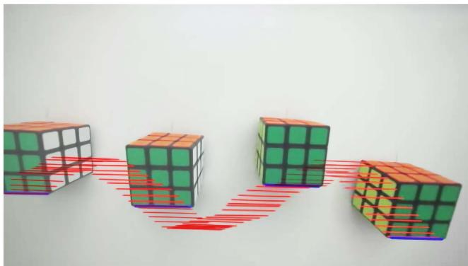
Fig. 1. The historical trajectory of line flow visualization. The magic cube appears from the left side of the image and moves to the right side. We pick the bottom line of a Rubik’s Cube to trace using our method. The blue line is the bottom edge of the cube traced at the moment when the shadow of the cube appears. The red lines are the historical tracks traced in successive frames.
- We propose a line residual estimation model. This method measures the residual using the angle between the plane normal vectors, which does not involve the endpoints of the line segments in the optimization process. The proposed method improves the accuracy of our estimator.
- An open-source version of the EPLF-VINS library and the guidance for deployment are publicly available at.
II. RELATED WORK
Benefiting from the development of line feature detection and matching techniques, it is possible to incorporate line features into SLAM systems. We briefly review the most relevant works.
A. Line Feature Detection and Matching
Line segment detection methods are classified into three categories: the Hough transform (HT), perceptual clustering, and deep learning-based methods. Although researchers have noticed the large computational load problem of HT and continuously improved it [12], [13], [14], the HT methods still have difficulty in achieving the real-time performance of SLAM algorithms. The most mainstream perceptual clustering is LSD, proposed by Grompone von Gioi [15]. The principle is to detect line segments locally using gradient direction values [16]. Many improved versions based on LSD have appeared later [17], [18], [19], among which EDLines [19] speed up line segment detection by changing the grayscale gradient. Deep learning-based line detection algorithms [20], [21] usually rely on graphics processing units for training and inference, and their computation time and generalization can be challenging. To speed up line feature detection, EDLines is used to complete the extraction of lines in this letter. We modify EDLines to obtain high-quality line features for constructing SLAM constraints.
The initial line-matching method mainly uses the spatial geometric information of the line for continuous frame tracking. Schmid and Zisserman [22] used gray level information and the multiple view geometric relations between the images to match line segments. The main drawback of these methods is the need to obtain polar line geometry information or accurate initial poses, which requires high accuracy of pose constraints and prior information. Compared with geometric information-based methods, MSLD [23] and LBD [24] are line-matching methods that match by local descriptors, which have the advantage of not relying on prior pose information. The local descriptor approach for line features is similar to SIFT [25] in point feature matching. However, it is less effective than point matching since the local neighborhoods of line segmentation are usually texture deficient and do not work satisfactorily in a repetitive texture environment. The method proposed in this letter is different from the above algorithms. We propose line tracking by establishing the optical flow form, which does not require prior pose information. Compared with MSLD and LBD, this method can solve the error-matching problem in repeated textures and does not require the description and matching line features in each frame.
B. Line-Based SLAM Systems
Early researchers discovered the excellent properties of the line feature and applied it to SLAM [26], [27]. With the appearance of the line detection method LSD and the line-matching method LBD, a large number of SLAM frameworks based on LSD and LBD have emerged [4], [9], [28], [29].
Pumarola [4] and Gomez-Ojeda [28] extended the line features on the ORB-SLAM. Compared with [28], the method [4] takes as error function the distances between the projected endpoints of the 3D line segment and its corresponding infinite line in the image plane to reduce the effect of the occlusion problem on the reprojection error. The advantage is that the influence of line endpoints on residual estimates can be reduced because the endpoint locations of the lines vary significantly, especially in occluded scenes, challenging illumination conditions, and weakly textured scenes [11]. Inspired by [4], we propose a line reprojection error model that does not make any assumptions about the endpoints.
PL-VIO [29] fuses the combination of LSD and LBD into visual-inertial SLAM. This method has better localization accuracy than VINS-Mono, but it does not maintain real-time performance. PL-VINS [9] is developed on VINS-Mono, which provides a complete VINS framework for point-line feature fusion. Furthermore, PL-VINS proposes a modified LSD, which reduces the time for line feature detection. We construct our algorithm based on PL-VINS and propose an efficient line feature detection and tracking model to further improve the real-time performance of the algorithm.
DPLVO [30] and EDPLVO [31] add line feature constraints to the direct method SLAM system. DPLVO obtains the depth of independent sampling pixel points on the detected line and the camera pose through DSO and then reprojects and tracks these points by minimizing the photometric error to the second frame. The advantage is that the line tracking problem can converge even in the case of large position changes in the line between two frames. However, this method requires the depth of the points on the line and keyframe poses before tracing. To reduce the inaccurate depth estimation problem, EDPLVO tracks these points along the epipolar line. In contrast to this approach, our method does not require poses and depth information, which can directly track line features between two image frames. In addition, our approach minimizes the grayscale error of the entire pixel area on the line rather than separately minimizing that of several independent sampling points. In response to the situation of large position changes in the line between two frames, we propose an image pyramid implementation of our line tracking method.
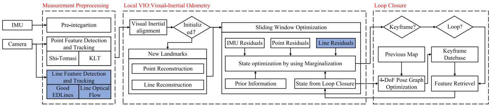
Fig. 2. System overview of EPLF-VINS. Our system is developed based on VINS-Mono and PL-VINS, which implements three threads: measure preprocessing local VIO, and loop closure. The blue box indicates the difference from the existing algorithm, including line feature detection and tracking (see Section IV) and line residuals (see Section V).
III. OVERVIEW
A. System Overview
The system overview of the proposed monocular visualinertial SLAM is shown in Fig. 2. The basic structure of our approach is similar to that of VINS-Mono and PL-VINS. Our approach focuses on improving the efficiency and accuracy of the state-of-the-art algorithm with a novel line optical flow tracking algorithm and a new method of constructing the line feature residual.
It should be particularly noted that, compared with other point-line fusion VINS based on VINS-Mono, such as PL-VIO, PL-VINS, and PLF-VINS, we discard the time-consuming combination of LSD and LBD with a modified version of EDLines detection and a new line optical flow tracking method, the running speed of which is greatly improved. For the measurement model of line features, we construct residuals that avoid the situation ofocclusion and short-line matching. The improvement of the above elements leads to the enhancement of the SLAM system.
B. Notations
We define notations that we use throughout this letter. (·)w and (·)c represent the world frame and camera frame, respectively. (·)w represents the coordinate transformation from the camera
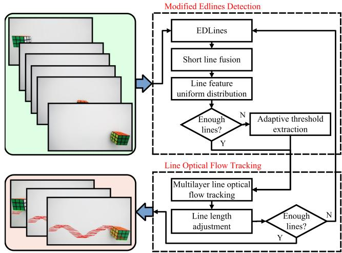
Fig. 3. The frame of the line feature detection and tracking model. It implements two models: modified EDLines detection (MED) and line optical flow tracking (LOFT). MED detects new line features in the image, and LOFT tracks the line features in the previous image frames.
frame to the world frame. × denotes cross multiplication. L represent line landmarks, and represents the line feature L observed by the i-th camera frame.
IV. LINE FEATURE DETECTION AND TRACKING MODEL
In this section, we introduce the content of line feature detection and tracking. The framework is shown in Fig. 3. It consists of two parts. Modified EDLines detection (MED) improves on EDLines to generate high-quality line features for SLAM systems. Line optical flow tracking (LOFT) tracks the detected lines in consecutive frames. The number of line features falls below a threshold due to changes in the observation angle and poor-quality line tracking failures. MED is invoked again to replenish the number of features.
The previous works of line feature matching detect the line features for multiple consecutive frames [4], [9] and then match them after describing the line features by LBD. The detection of consecutive frames and the matching process of line feature description are extremely time-consuming and affected by the repeated texture situation. The method [11] avoids the line feature description process by the principle of spatio-temporal consistency and reduces the range of line detection but still requires line detection in each frame. Compared with previous works, LOFT is the method of single frame extraction with consecutive multiframe tracking, hence becoming a faster-running approach to line feature matching.
A. Modified EDLines Detection
The main line segment detection algorithms used for SLAM are LSD and EDLines. LSD has excellent generality due to the characteristic of no explicit parameters, which limits researchers from easily extending LSD. Therefore, we chose EDLines as the basic algorithm for our line segment detection, which has abundant adjustable parameters. However, the segments detected by the original EDLines are not optimal for the SLAM constraint in terms of spatial distribution. Hence, we propose a modified EDLines detection.
MED contains three parts: short line fusion, line feature uniform distribution, and adaptive threshold extraction.
Short line fusion: Because partial occlusions often split a line into fragments and image noise might lead to unstable line endpoints [11], EDLines may extract a complete line into several short lines in these situations. This can make line flow tracking and optimization unstable. Therefore, we merge the short lines. The judgment is based on two aspects: the two lines are colinear, and the distance between the endpoints of the two lines is small enough. This is not entirely consistent with EDPLVO [31], which also uses this method. We assume that fusing two colinear lines that are far apart make the tracking and optimization process ambiguous.
Line feature uniform distribution: This method ensures that the extracted lines are uniformly distributed throughout the image with a certain spacing. More line features are extracted from texture-rich regions, especially if there is repeated texture in a region of the image. This can cause information redundancy in dense regions and increase the computational effort for tracking and optimization. Furthermore, the more uniformly features are distributed in space, the more accurately the feature matching can represent the geometric relationship in space. In this method, we add a wide mask at the position of the detected line in the current image and do not extract new lines on the mask.
Adaptive threshold extraction: After the above two strategies, the number of extracted lines is counted. Assume the number of lines is less than the threshold value set in advance. In that case, the line feature extraction is performed again by lowering the gradient threshold parameter of EDLines to obtain adequate line features in cases such as weak textures and slight grayscale variations.
B. Line Optical Flow Tracking
The line flow model in this letter is based on the theory of grayscale invariance.
A pixel located at at moment t is moved to dv) at moment . We can define the gray value of this pixel as:
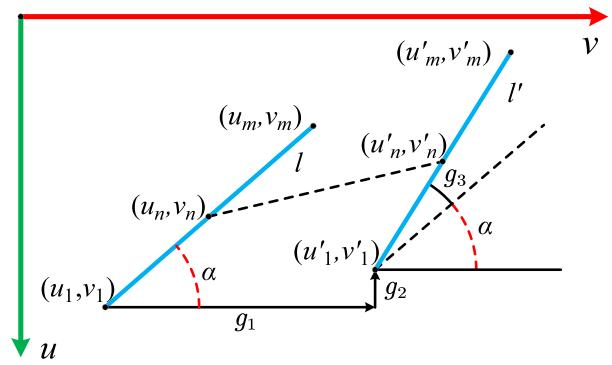
Fig. 4. The measurement model of line optical flow tracking.
The Taylor expansion on the left side of (1) is:
After expansion of (1), we obtain:
where and , denoted as and represent the gray gradients of the image in the u and v directions at this point. , denoted as , represents the amount of change in the image gray value against time. Then, the matrix form of (3) is written as:
In (4) is valid at any pixel point in the image, so it holds at the line segments, while the points on the line also have to satisfy the colinearity constraint.
We define the set of points on the line:
where and represent the starting and ending points of the line, respectively. represents the Euclidean distance between and . In Fig. 4, l denotes the next frame position of l. The relationship between the corresponding points of the line between two consecutive frames is:
where , and represent the change in position of the starting point and the change in rotation around the starting point , respectively.
Between two consecutive frames, is a tiny change, and . Hence, (6) can be simplified as:
From (7), we can obtain:
By (8), we define and as , and respectively, and (4) can be expressed as:
Each point on the line satisfies the above equation, so this is an overdetermined linear equation about and . We solve it by the Gaussian Newton method. When the camera moves at high speed, the local dramatically changing gray gradient makes predicting the line flow direction difficult. To improve the line flow tracking ability, we extend the pyramidal implementation of the Lucas-Kanade feature tracker [32] to the line flow. In fact, the long segments of the lines in space are not consistent from one viewpoint to another. However, the lengths ofthe lines observed in consecutive frames do not change abruptly. We construct constraints on line flow tracking by discarding a small straight line segment near the two endpoints and extend it by judging whether the endpoint gray gradient is consistent with the line segment after the tracking is completed. We judge the quality of each line tracking by the convergence of the iterations. The successfully traced lines are added to the optimization. If the number of good-traced lines is less than the threshold, we extract new lines by MED to supplement them.
V. LINE FEATURE MEASUREMENT MODEL
First, this letter briefly describes the line representation. To our group’s knowledge, an early work of systematically introducing line feature measurement models is [33], and many subsequent line feature-based SLAM systems [9], [11], [29], [34] have been developed on this theory. Interested readers can read this letter in detail. We emphasize the residual construction equation, which is different from previous works.
A. Line Representation
A line has four degrees of freedom in space. In this letter, we use two forms of line representation. Plücker representation consists of six parameters, which are used for initialization, transformation and projection. Orthogonal representation consists of four parameters, which are used for optimization.
Plücker representation: The three-dimensional spatial line, which is shown in Fig. 5, can be expressed as:
where denotes the line direction vector and denotes the normal vector of plane determined by and the origin of the camera coordinate system.
Orthonormal representation: Although the Plücker coordinate can represent the transformation process concisely, it is not easy to optimize directly due to its overparameterization. Therefore, an orthonormal representation consisting of four parameters is used for optimization [34]. The 3-D spatial line can be expressed as:
where and
(11)
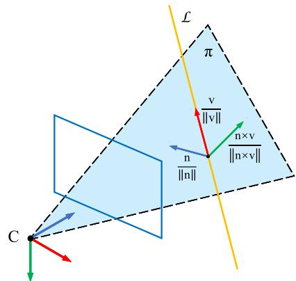
Fig. 5. Plücker line representation.
The equation for the Plücker coordinate system to the orthogonal coordinate system can be expressed as:
Therefore, orthonormal representation can also be expressed as:
B. Observation Model
In previous works, such as PL-VIO and PL-VINS, the line reprojection error is constructed by the distance between the endpoints of the observed lines and the reprojected lines. The magnitude of the residuals depends on the accuracy of the line endpoints. However, the line features in space are inconsistent in the length of the observed lines in the camera image plane at different views. Moreover, the line feature detection methods may divide the long line into several short-line segments when the line is subject to other perturbations, such as occlusion. These can lead to significant changes in the endpoint positions and then affect the residual value. We propose a concise method to construct residuals that are independent of the line segment endpoints.
We define plane π˜ and plane π, which are shown in Fig. 6. The plane formed between the origin of the camera coordinate system and the observed line in the normalized plane. The plane is formed between the origin of the camera coordinate system and the projected line in the normalized plane. The line reprojection error can be defined as:
where and represent the normal vectors of the plane and is the full state variables in a sliding window, and
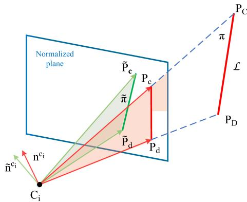
Fig. 6. Computation of the line reprojection error.
represents the line feature L observed by the i-th camera frame. The corresponding Jacobian matrix can be obtained by the chain rule [29]:
With
\begin{array} { r l } { { \frac { \partial \mathbf { r } _ { \mathrm { n } } } { \partial \mathbf { n } ^ { c _ { \mathrm { i } } } } = [ \frac { \partial \mathbf { r } _ { \mathrm { n } } } { \partial \mathbf { n } _ { 1 } ^ { c _ { \mathrm { i } } } } \quad \frac { \partial \mathbf { r } _ { \mathrm { n } } } { \partial \mathbf { n } _ { 2 } ^ { c _ { \mathrm { i } } } } \quad \frac { \partial \mathbf { r } _ { \mathrm { n } } } { \partial \mathbf { n } _ { 3 } ^ { c _ { \mathrm { i } } } } ] ^ { T } } } \\ & = [ \begin{array} { l } { n _ { 1 } ^ { c _ { \mathrm { i } } } \frac { \tilde { \mathbf { n } } ^ { c _ { \mathrm { i } } } \cdot \tilde { \mathbf { n } } ^ { c _ { \mathrm { i } } } } { \| \tilde { \mathbf { n } } ^ { c _ { \mathrm { i } } } \| ^ { \frac { 3 } { 2 } } \| \mathbf { n } ^ { c _ { \mathrm { i } } } \| ^ { \frac { 3 } { 2 } } } - \frac { \tilde { n } _ { 1 } ^ { c _ { \mathrm { i } } } } { \| \tilde { \mathbf { n } } ^ { c _ { \mathrm { i } } } \| \| \mathbf { n } ^ { c _ { \mathrm { i } } } \| } } \\ { n _ { 2 } ^ { c _ { \mathrm { i } } } \frac { \tilde { \mathbf { n } } ^ { c _ { \mathrm { i } } } \cdot \mathbf { n } ^ { c _ { \mathrm { i } } } } { \| \tilde { \mathbf { n } } ^ { c _ { \mathrm { i } } } \| ^ { \frac { 3 } { 2 } } \| \mathbf { n } ^ { c _ { \mathrm { i } } } \| ^ { \frac { 3 } { 2 } } } - \frac { \tilde { n } _ { 2 } ^ { c _ { \mathrm { i } } } } { \| \tilde { \mathbf { n } } ^ { c _ { \mathrm { i } } } \| \| \mathbf { n } ^ { c _ { \mathrm { i } } } \| } } \\ n _ { 3 } ^ { c _ { \mathrm { i } } } \frac \tilde { \mathbf { n } } ^ \end{array} \end{array}\tag{17}
VI. EXPERIMENTS
Due to the open-source code of PL-VINS and VINS-Mono, it is possible to build our algorithm quickly within the VINS system. We evaluate the proposed method using indoor and outdoor datasets, including EuRoC [35], TUM VI [36] and KAIST VIO [37]. Considering the characteristics of each dataset, we selectively conduct quantitative evaluation and visualization experiments to show the performance of our algorithm.
A. Implementation Details
To uniformly evaluate the accuracy and efficiency of the algorithm, all experiments are performed on identical computational resources and dependency libraries. All algorithms are run on Ubuntu 18.04 with a 3.6 GHz Core AMD Ryzen 5-3600 CPU and 16 GB memory desktop PC. We use the Ceres solver [38] to perform optimization. The version of OpenCV is 3.4.16, which contains the library functions for EDLines and LSD. The parameters of the comparison algorithm are the default values in the open-source code.
Parameter setting: EDLines has three primary parameters: , and which denote the value of the gradient threshold, anchor threshold, and scan interval, respectively.
We set to 32 and to 16 to select anchor points with larger grayscale gradients, thus extracting lines that are more suitable for tracking. is set as 4 to eliminate short segments.
TABLE I
AVERAGE RUNTIME COMPARISON(MILLISECOND)
| Thread | Module | Times(ms) | |||||
| VINS- Mono | VINS- Fusion | PL- VINS | E-PL- VINS | PL-F- VINS | EPLF- VINS | ||
| 1 | Point Detection & Tracking | 12.05 | 11.03 | 12.61 | 12.70 | 12.53 | 12.16 |
| 2 | Line Detection & Tracking | - | = | 25.30 | 18.05 | 20.58 | 16.98 |
| 3 | Local VIO | 26.47 | 21.17 | 29.68 | 30.08 | 30.45 | 29.23 |
| 4 | Loop Closure | 77.45 | 73.63 | 76.24 | 79.20 | 78.88 | 75.24 |
If the angle of the extension of the two lines is within and the endpoints of the two short lines are less than 10 pixels apart, we fuse the two lines. We distribute the lines uniformly and set the line spacing to 15 pixels to ensure that the lines are not too densely distributed. The number of lines extracted per frame is 50. If the number is insufficient, and are reduced by half to ensure that a certain number of line features can be extracted even in weakly textured areas.
When the average grayscale error of the points is more significant than five between the detected line and the traced line or the gradient of the traced line is less than 128, we decide that those lines are tracing fail. These two strategies ensure that the traced lines are always accurate. If the number of successfully traced lines is less than 35, the MED is called to complement the line features.
Ablation sutdy: We use E-PL-VINS and PL-F-VINS to denote two variants of the proposed algorithm. E-PL-VINS replace the LSD of PL-VINS with MED. PL-F-VINS replace the LBD of PL-VINS with LOFT. The residual estimation models of these two algorithms are consistent with PL-VINS.
B. Line Flow Analysis
Lineflow visualization: For a clear visualization, we select an edge of the magic cube for line feature tracking and display the motion trajectory of the cube, which is shown in Fig. 1. After detecting this edge of the cube in the first frame, our algorithm performs accurate continuous line tracking in the subsequent frames.
Running time: We measure the line feature detection and tracking runtime on the datasets, including EuRoC, TUM VI, and KAIST VIO, which is shown in Fig. 7. The experimental results show that both MED and LOFT modules have speed improvements for line feature detection and matching compared to PL-VINS. For a more holistic comparison, we evaluate the average runtime of each thread of the algorithms over the full sequences of the EuRoC dataset, which is shown in Table I. VINS-Fusion is slightly faster than VINS-Mono on all threads. Because the line feature residuals are added to the optimization, PL-VINS, E-PL-VINS, PL-F-VINS, and EPLF-VINS have time increases in thread 3 compared with VINS-Mono. For thread 2, E-PL-VINS, PL-F-VINS, and EPLF-VINS improve the speed over PL-VINS by 28.7%, 18.7%, and 32.9%, respectively.
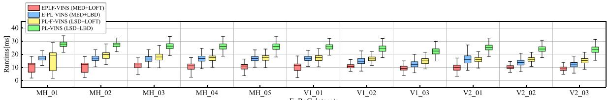
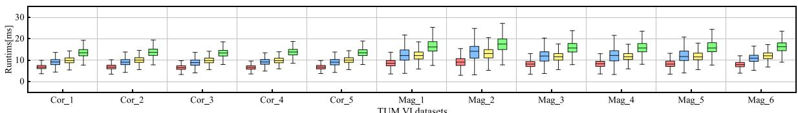
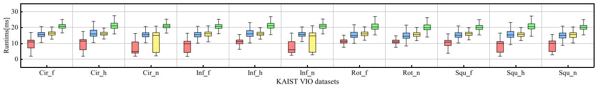
Fig. 7. Runtimes of line feature detection and tracking.
TABLE II
RMSE ATE [M] COMPARISON OF VINS-MONO, PL-VINS, E-PL-VINS, PL-F-VINS, AND EPLF-VINS
| MH_01 | MH_02 | MH_03 | MH_04 | MH_05 | V1_01 | V2_01 | V2_03 | Average | Best Count | |||||
| VINS-Mono | w/o loop | 0.2023 | 0.1879 | 0.2281 | 0.3697 | 0.2968 | 0.0971 | 0.0914 | 0.1766 | 0.0794 | 0.1191 | 0.3064 | 0.1959 | 1 |
| [3] | w/ loop | 0.0830 | 0.0920 | 0.0627 | 0.1235 | 0.1403 | 0.0438 | 0.0561 | 0.1976 | 0.0631 | 0.1821 | 0.1939 | 0.1125 | |
| PL-VINS | w/o loop | 0.2159 | 0.1933 | 0.2177 | 0.2471 | 0.3254 | 0.0680 | 0.1079 | 0.1544 | 0.0904 | 0.1099 | 0.2049 | 0.1759 | 0 |
| [9] | w/ loop | 0.0856 | 0.0831 | 0.0618 | 0.0897 | 0.1537 | 0.0456 | 0.0381 | 0.1408 | 0.0532 | 0.0774 | 0.1418 | 0.0882 | |
| E-PL-VINS | w/o loop | 0.2245 | 0.1968 | 0.2195 | 0.2476 | 0.3248 | 0.0689 | 0.1097 | 0.1510 | 0.0905 | 0.1126 | 0.2156 | 0.1783 | 2 |
| with MED | w/ loop | 0.0832 | 0.1114 | 0.0618 | 0.0892 | 0.1128 | 0.0435 | 0.0388 | 0.1358 | 0.0524 | 0.0737 | 0.1456 | 0.0862 | |
| PL-F-VINS | w/o loop | 0.2059 | 0.1812 | 0.1624 | 0.1622 | 0.2185 | 0.0582 | 0.1088 | 0.1684 | 0.1000 | 0.1281 | 0.2009 | 0.1540 | 3 |
| with LOFT | w/ loop | 0.0657 | 0.1031 | 0.0687 | 0.0855 | 0.1033 | 0.0536 | 0.0427 | 0.1517 | 0.0930 | 0.0724 | 0.1389 | 0.0890 | |
| EPLF-VINS | w/o loop | 0.1404 | 0.0879 | 0.1137 | 0.1826 | 0.1817 | 0.0660 | 0.0598 | 0.1295 | 0.1511 | 0.1008 | 0.1692 | 0.1257 | |
| Ours | w/ loop | 0.0426 | 0.0724 | 0.0469 | 0.1250 | 0.0853 | 0.0456 | 0.0343 | 0.1226 | 0.0955 | 0.0575 | 0.1110 | 0.0762 | 16 |
C. Quantitative Comparison
We measure the complete sequences of the EuRoC dataset, which consists of 11 sequences in the machine hall and Vicon room with structural information. Table II shows the root mean square error (RMSE) of the absolute trajectory error (ATE). In the constraints without loop closure, EPLF-VINS shows an accuracy improvement of 35.83% over VINS-Mono and 28.54% over PL-VINS in the average translation value. PL-F-VINS shows a certain degree of accuracy improvement. In the constraints with loop closure, EPLF-VINS shows an accuracy improvement of 32.27% over VINS-Mono and 13.61% over PL-VINS. The experimental results show that the line feature measurement model of our system further improves the accuracy compared with PL-VINS, E-PL-VINS, and PL-F-VINS.
D. Qualitative Evaluation
The magistrate of the TUM VI benchmark is a sequence featuring a walk around the central hall in a university building containing rich line features. We conduct visualized experiments of the line feature detection and tracking compared with PL-VINS, which is shown in Fig. 8(a). Benefiting from our MED strategy, the green extracted lines and the blue traced lines in Fig. 8(a) are more rationally distributed in space than the red lines. Reasonable line feature detection and residual measurement model make the back-end mapping more precise and accurate, as shown in Fig. 8(b).
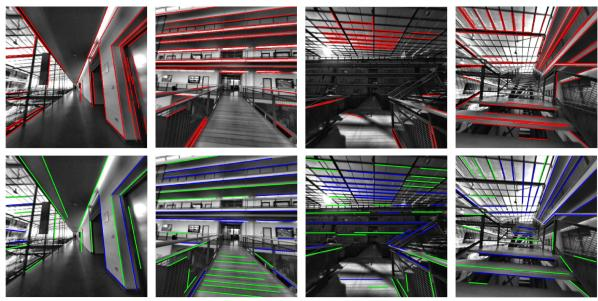
(a)
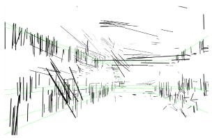
(b)
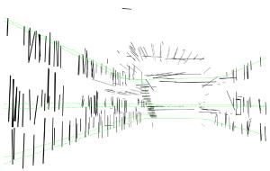
(c)
Fig. 8. The experimental results on the TUM VI benchmark datasets. The red lines in (a) indicate the line detection and match visualization of PL-VINS. The green lines (detected lines) and the blue lines (traced lines) on the lower side of (a) show our algorithm results. (a) Comparison results with PL-VINS of the line feature extraction and tracking. (b) Line map of PL-VINS. (c) Line map of EPLF-VINS.
VII. CONCLUSION
We propose a concise and efficient line flow detection and tracking algorithm that improves the quality of the line features through a modified line feature extraction strategy. The line flow tracker is more efficient than the traditional LBD matching algorithm. In addition, a novel line feature measurement model is proposed to represent the residuals to eliminate the influence of the line endpoints on the residual estimation. We provide quantitative evaluation and visualization experiments using the EuRoC, TUM VI, and KAIST VIO datasets. Compared with the state-of-the-art, our algorithm is more computationally efficient and obtains more accurate results.
REFERENCES
[1] G. Huang, “Visual-inertial navigation: A concise review,” in Proc. IEEE Int. Conf. Robot. Automat., 2019, pp. 9572–9582.
[2] A. I. Mourikis and S. I. Roumeliotis, “A multi-state constraint kalman filter for vision-aided inertial navigation,” in Proc. IEEE Int. Conf. Robot. Automat., 2007, pp. 3565–3572.
[3] T. Qin, P. Li, and S. Shen, “VINS-Mono: A robust and versatile monocular visual-inertial state estimator,” IEEE Trans. Robot., vol. 34, no. 4, pp. 1004–1020, Aug. 2018.
[4] R. Gomez-Ojeda, F.-A. Moreno, D. Zuñiga-Noël, D. Scaramuzza, and J. Gonzalez-Jimenez, “PL-SLAM: A stereo SLAM system through the combination of points and line segments,” IEEE Trans. Robot., vol. 35, no. 3, pp. 734–746, Jun. 2019.
[5] G. Zhang and I. H. Suh, “Building a partial 3D line-based map using a monocular SLAM,” in Proc. IEEE Int. Conf. Robot. Automat., 2011, pp. 1497–1502.
[6] P. Smith, I. Reid, and A. Davison, “Real-time monocular SLAM with straight lines,” in Proc. Brit. Mach. Vis. Conf., 2006, pp. 17–26.
[7] H. Zhou, D. Zou, L. Pei, R. Ying, P. Liu, and W. Yu, “StructSLAM: Visual SLAM with building structure lines,” IEEE Trans. Veh. Technol., vol. 64, no. 4, pp. 1364–1375, Apr. 2015.
[8] D. Ruifang, V. Fremont, S. Lacroix, I. Fantoni, and L. Changan, “Linebased monocular graph SLAM,” in Proc. IEEE Int. Conf. Multisensor Fusion Integration Intell. Syst., 2017, pp. 494–500.
[9] Q. Fu, J. Wang, H. Yu, I. Ali, F. Guo, and H. Zhang, “PL-VINS: Real-time monocular visual-inertial SLAM with point and line,” 2020, arXiv:2009.07462. [Online]. Available: https://arxiv.org/abs/2009.07462
[10] Y. Zhao and P. A. Vela, “Good line cutting: Towards accurate pose tracking of line-assisted VO/VSLAM,” in Proc. Eur. Conf. Comput. Vis, 2018, pp. 527–543.
[11] Q. Wang, Z. Yan, J. Wang, F. Xue, W. Ma, and H. Zha, “Line flow based simultaneous localization and mapping,” IEEE Trans. Robot., vol. 37, no. 5, pp. 1416–1432, Oct. 2021.
[12] Y. Furukawa and Y. Shinagawa, “Accurate and robust line segment extraction by analyzing distribution around peaks in Hough space,” Comput. Vis. Image Understanding, vol. 92, no. 1, pp. 1–25, 2003.
[13] A. Vakhitov, J. Funke, and F. Moreno-Noguer, “Accurate and linear time pose estimation from points and lines,” in Proc. Eur. Conf. Comput. Vis, 2016, pp. 583–599.
[14] Z. Xu, B.-S. Shin, and R. Klette, “Closed form line-segment extraction using the Hough transform,” Pattern Recognit., vol. 48, pp. 4012–4023, 2015.
[15] R. Grompone von Gioi, J. Jakubowicz, J.-M. Morel, and G. Randall, “LSD: A fast line segment detector with a false detection control,” IEEE Trans. Pattern Anal. Mach. Intell., vol. 32, no. 4, pp. 722–732, Apr. 2010.
[16] J. B. Burns, A. R. Hanson, and E. M. Riseman, “Extracting straight lines,” IEEE Trans. Pattern Anal. Mach. Intell., vol. PAMI-8, no. 4, pp. 425–455, Jul. 1986.
[17] Q. Yu, G. Xu, Y. Cheng, and Z. H. Zhu, “PLSD: A perceptually accurate line segment detection approach,” IEEE Access, vol. 8, pp. 42595–42607, 2020.
[18] N. Hamid and N. Khan, “LSM: Perceptually accurate line segment merging,” J. Electron. Imag., vol. 25, no. 6, 2016, Art. no. 0 61620.
[19] C. Akinlar and C. Topal, “EDLines: A real-time line segment detector with a false detection control,” Pattern Recognit. Lett., vol. 32, no. 13, pp. 1633–1642, 2011.
[20] K.-K. Maninis, J. Pont-Tuset, P. Arbeláez, and L. Van Gool, “Convolutional oriented boundaries: From image segmentation to high-level tasks,” IEEE Trans. Pattern Anal. Mach. Intell., vol. 40, no. 4, pp. 819–833, Apr. 2018.
[21] R. Pautrat, J.-T. Lin, V. Larsson, M. R. Oswald, and M. Pollefeys, “Sold2: Self-supervised occlusion-aware line description and detection,” in Proc. IEEE Conf. Comput. Vis. Pattern Recognit., 2021, pp. 11 368–11 378.
[22] C. Schmid and A. Zisserman, “Automatic line matching across views,” in Proc. IEEE Conf. Comput. Vis. Pattern Recognit., 1997, pp. 666–671.
[23] Z. Wang, F. Wu, and Z. Hu, “MSLD: A robust descriptor for line matching,” Pattern Recognit., vol. 42, no. 5, pp. 941–953, 2009.
[24] L. Zhang and R. Koch, “An efficient and robust line segment matching approach based on LBD descriptor and pairwise geometric consistency,” J. Vis. Commun. Image Representation, vol. 24, no. 7, pp. 794–805, 2013.
[25] D. G. Lowe, “Distinctive image features from scale-invariant keypoints,” Int. J. Comput. Vis., vol. 60, no. 2, pp. 91–110, Nov. 2004.
[26] N. Ayache and O. Faugeras, “Building, registrating, and fusing noisy visual maps,” Int. J. Rob. Res., vol. 7, no. 6, pp. 45–65, Dec. 1988.
[27] E. Perdices, L. Lopez-Ramos, and J. C. Plaza, “LineSLAM: Visual real time localization using lines and UKF,” in Proc. 1st ROBOTIberian Robot. Conf., 2014, vol. 252, pp. 663–678.
[28] A. Pumarola, A. Vakhitov, A. Agudo, A. Sanfeliu, and F. Moreno-Noguer, “PL-SLAM: Real-time monocular visual SLAM with points and lines,” in Proc. IEEE Int. Conf. Robot. Automat., 2017, pp. 4503–4508.
[29] H. Yijia, J. Zhao, Y. Guo, W. He, and K. Yuan, “PL-VIO: Tightly-coupled monocular visual–inertial odometry using point and line features,” Sensors, vol. 18, 2018, Art. no. 1159.
[30] L. Zhou, S. Wang, and M. Kaess, “DPLVO: Direct point-line monocular visual odometry,” IEEE Robot. Automat. Lett., vol. 6, no. 4, pp. 7113–7120, Oct. 2021.
[31] L. Zhou, G. Huang, Y. Mao, S. Wang, and M. Kaess, “EDPLVO: Efficient direct point-line visual odometry,” in Proc. IEEE Int. Conf. Robot. Automat., 2022, pp. 7559–7565.
[32] J. Y. Bouguet et al., “Pyramidal implementation of the affine lucas kanade feature tracker description of the algorithm,” Intel Corporation, vol. 5, no. 1–10, p. 4, 2001.
[33] A. Bartoli and P. Sturm, “Structure-from-motion using lines: Representation, triangulation, and bundle adjustment,” Comput. Vis. Image Understanding, vol. 100, no. 3, pp. 416–441, 2005. [Online]. Available: https://www.sciencedirect.com/science/article/pii/S1077314205000846
[34] G. Zhang, J. H. Lee, J. Lim, and I. H. Suh, “Building a 3-D line-based map using stereo SLAM,” IEEE Trans. Robot., vol. 31, no. 6, pp. 1364–1377, Dec. 2015.
[35] M. Burri et al., “The EuRoc micro aerial vehicle datasets,” Int. J. Rob. Res., vol. 35, no. 10, pp. 1157–1163, 2016.
[36] D. Schubert, T. Goll, N. Demmel, V. Usenko, J. Stückler, and D. Cremers, “The TUM VI benchmark for evaluating visual-inertial odometry,” in Proc. IEEE/RSJ Int. Conf. Intell. Robots Syst., 2018, pp. 1680–1687.
[37] J. Jeon, S. Jung, E. Lee, D. Choi, and H. Myung, “Run your visual-inertial odometry on NVIDIA jetson: Benchmark tests on a micro aerial vehicle,” IEEE Robot. Automat. Lett., vol. 6, no. 3, pp. 5332–5339, Jul. 2021.
[38] S. Agarwal, K. Mierle, and T. C. S. Team, “Ceres solver,” 2022. [Online]. Available: https://github.com/ceres-solver/ceres-solver
md/2023_EPLF-VINS__Real-Time_Monocular_Visual-Inertial_SLAM_With.md 预渲染生成。公式以 MathML 呈现，浏览器原生渲染，不依赖外部脚本或字体 CDN。